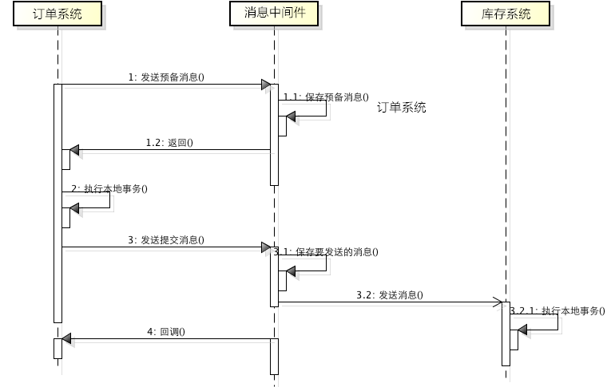
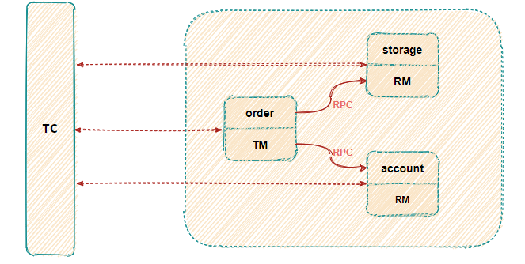

spring cloud
微服务
微服务架构的分布式事务解决方案
分布式事务的典型处理方式:2PC、TCC、异步确保和最大努力型
ACID
- https://zh.wikipedia.org/wiki/ACID
- Atomicity（原子性）：一个事务（transaction）中的所有操作，或者全部完成，或者全部不完成，不会结束在中间某个环节。即，事务不可分割、不可约简。
- Consistency（一致性）：在事务开始之前和事务结束以后，数据库的完整性没有被破坏。这表示写入的资料必须完全符合所有的预设约束、触发器、级联回滚等。
- Isolation（隔离性）：数据库允许多个并发事务同时对其数据进行读写和修改的能力，隔离性可以防止多个事务并发执行时由于交叉执行而导致数据的不一致。事务隔离分为不同级别，包括未提交读（Read uncommitted）、提交读（read committed）、可重复读（repeatable read）和串行化（Serializable）。
- Durability（持久性）：事务处理结束后，对数据的修改就是永久的，即便系统故障也不会丢失。
RDBMS 事务隔离级别
- 并发问题几个场景
- 脏读：一个事务读取了另一个事务操作但未提交的数据。
- 比如 A、B 两个事务，都操作同一张表，A 刚刚对数据进行了操作（插入、修改等）但还没有提交，这时 B 读取到了 A 刚刚操作的数据，因为 A 有可能回滚，所以这部分数据有可能只是临时的、无效的，即脏数据。
- 不可重复读：一个事务中的多个相同的查询返回了不同数据。
比如 A、B 两个事务，A 中先后有两次查询相同数据的操作，第一次查询完之后，B 对相关数据进行了修改，造成 A 事务第二次查询出的数据与第一次不一致。
- 幻读：事务并发执行时，其中一个事务对另一个事务中操作的结果集的影响。
- 比如 A、B 两个事务，事务 A 操作表中符合条件的若干行。事务 B 插入符合 A 操作条件的数据行，然后再提交。后来发现事务 A 并没有如愿对“所有”符合条件的数据行做了修改。
- 四个事务隔离级别
- Read uncommitted (读未提交)：如果设置了该隔离级别，则当前事务可以读取到其他事务已经修改但还没有提交的数据。这种隔离级别是最低的，会导致上面所说的脏读
- Read committed (读已提交)：如果设置了该隔离级别，当前事务只可以读取到其他事务已经提交后的数据，这种隔离级别可以防止脏读，但是会导致不可重复读和幻读。这种隔离级别最效率较高，并且不可重复读和幻读在一般情况下是可以接受的，所以这种隔离级别最为常用。
- Repeatable read (可重复读)：如果设置了该隔离级别，可以保证当前事务中多次读取特定记录的结果相同。可以防止脏读、不可重复读，但是会导致幻读。
- Serializable (串行化)：如果设置了该隔离级别，所有的事务会放在一个队列中执行，当前事务开启后，其他事务将不能执行，即同一个时间点只能有一个事务操作数据库对象。这种隔离级别对于保证数据完整性的能力是最高的，但因为同一时刻只允许一个事务操作数据库，所以大大降低了系统的并发能力。
CAP 定理
- 一致性（Consistency） （等同于所有节点访问同一份最新的数据副本）
- 可用性（Availability）（每次请求都能获取到非错的响应——但是不保证获取的数据为最新数据）
- 分区容错性（Partition tolerance）（以实际效果而言，分区相当于对通信的时限要求。系统如果不能在时限内达成数据一致性，就意味着发生了分区的情况，必须就当前操作在C和A之间做出选择[3]。）
- 根据定理，分布式系统只能满足三项中的两项而不可能满足全部三项[4]。理解CAP理论的最简单方式是想象两个节点分处分区两侧。允许至少一个节点更新状态会导致数据不一致，即丧失了C性质。如果为了保证数据一致性，将分区一侧的节点设置为不可用，那么又丧失了A性质。除非两个节点可以互相通信，才能既保证C又保证A，这又会导致丧失P性质。
BASE 理论（在微服务下的事务管理必然要遵循新的法则）
- BASE 理论是对 CAP 理论的延伸，核心思想是即使无法做到强一致性，应用应该可以采用合适的方式达到最终一致性。
- BASE 是指基本可用（Basically Available）、软状态（ Soft State）、最终一致性（ Eventual Consistency）。
- 基本可用：指分布式系统在出现故障的时候，允许损失部分可用性，即保证核心可用。
- 软状态：允许系统存在中间状态，而该中间状态不会影响系统整体可用性。分布式存储中一般一份数据至少会有三个副本，允许不同节点间副本同步的延时就是软状态的体现。
- 最终一致性：最终一致性是指系统中的所有数据副本经过一定时间后，最终能够达到一致的状态。弱一致性和强一致性相反，最终一致性是弱一致性的一种特殊情况。
参考：
- [对比 5 种分布式事务方案，还是宠幸了阿里的 Seata（原理 + 实战）]https://mp.weixin.qq.com/s?__biz=MzU0OTE4MzYzMw==&mid=2247497767&idx=3&sn=727bff63c4598e93f6f6e4a67e780e37&chksm=fbb171d9ccc6f8cff428ec385babf069fc4d3bce9a5258446cd0e1763d4e80f886c1ea14fbec&&xtrack=1&scene=90&subscene=93&sessionid=1606710118&clicktime=1606710436&enterid=1606710436#rd
- [分布式事务，这一篇就够了]https://xiaomi-info.github.io/2020/01/02/distributed-transaction/
- [分布式事务的典型处理方式：2PC、TCC、异步确保和最大努力型]http://kaimingwan.com/post/fen-bu-shi/fen-bu-shi-shi-wu-de-dian-xing-chu-li-fang-shi-2pc-tcc-yi-bu-que-bao-he-zui-da-nu-li-xing
分布式事务有哪 5 中方案
- 常见的比如基于 XA 协议的 2PC、3PC，基于业务层的 TCC，还有应用消息队列 + 消息表实现的最终一致性方案，还有今天要说的 Seata 中间件
- 开发中幂等性是极为重要的。 简单来说，对于同一个系统，在同样条件下，一次请求和重复多次请求对资源的影响是一致的，就称该操作为幂等的。
2PC
- XA 协议中分为两部分：事务管理器和本地资源管理器。
- 其中本地资源管理器往往由数据库实现，比如 Oracle、MYSQL 这些数据库都实现了 XA 接口，而事务管理器则作为一个全局的调度者。
- 优点：
- 严格保障事务 ACID 特性；
- 想使用本地事务一样透明；
- 对业务侵⼊很小。
- 缺点：
- 强一致性的同步阻塞协议，锁定全部资源。
3PC
- 是 2PC 的一种改进版本。
- CanCommit、PreCommit、DoCommit 三个阶段。
- 在第一阶段，只是询问所有参与者是否可可以执行事务操作，并不在本阶段执行事务操作。当协调者收到所有的参与者都返回 YES 时，在第二阶段才执行事务操作，然后在第三阶段在执行 commit 或者 rollback。
- 2PC 中只有协调者有超时机制，3PC 在协调者和参与者中都引入了超时机制，协调者出现故障后，参与者就不会一直阻塞。
- 多了一次网络通信，性能上反而变得更差
TCC
- TCC 为在业务层编写代码实现的两阶段提交。
- TCC 分别指 Try、Confirm、Cancel ，一个业务操作要对应的写这三个方法。以下单扣库存为例，Try 阶段去占库存，Confirm 阶段则实际扣库存，如果库存扣减失败 Cancel 阶段进行回滚，释放库存。
- TCC 不存在资源阻塞的问题，因为每个方法都直接进行事务的提交，一旦出现异常通过则 Cancel 来进行回滚补偿，这也就是常说的补偿性事务。
- TCC 对业务的侵入性很强。
消息事务（最终一致性）
- 消息事务其实就是基于消息中间件的两阶段提交，将本地事务和发消息放在同一个事务里，保证本地操作和发送消息同时成功。

Seata
- Seata 也是从两段提交演变而来的一种分布式事务解决方案，提供了 AT、TCC、SAGA 和 XA 等事务模式，这里重点介绍 AT 模式。
- 几种角色
- Transaction Coordinator(TC): 全局事务协调者，用来协调全局事务和各个分支事务（不同服务）的状态， 驱动全局事务和各个分支事务的回滚或提交。
- Transaction Manager™: 事务管理者，业务层中用来开启/提交/回滚一个整体事务（在调用服务的方法中用注解开启事务）。
-
Resource Manager(RM): 资源管理者，一般指业务数据库代表了一个分支事务（Branch Transaction），管理分支事务与 TC 进行协调注册分支事务并且汇报分支事务的状态，驱动分支事务的提交或回滚。

-
Seata 实现分布式事务，设计了一个关键角色 UNDO_LOG （回滚日志记录表），我们在每个应用分布式事务的业务库中创建这张表，这个表的核心作用就是，将业务数据在更新前后的数据镜像组织成回滚日志，备份在 UNDO_LOG 表中，以便业务异常能随时回滚。
- Seata 执行的两个阶段
- 第一个阶段：本地事务提交，业务数据的更新和前面生成的 UNDO LOG 数据一并提交，并将本地事务提交的结果上报给全局事务协调者 TC。
- 第二阶段：根据各分支的决议做提交或回滚。
- Seata 实践
- file.conf 文件用于配置持久化事务日志的模式，目前提供 file、db、redis 三种方式。
- registry.conf 文件设置 注册中心 和 配置中心：目前注册中心支持 nacos 、eureka、redis、zk、consul、etcd3、sofa 七种。
- Seata Client
- 注册服务：新建三个服务 order-server（下单服务）、storage-server（扣减库存服务）、account-server（账户金额服务），分别服务注册到注册中心。
- 用 @GlobalTransactional 注解开启一个全局事务即可。